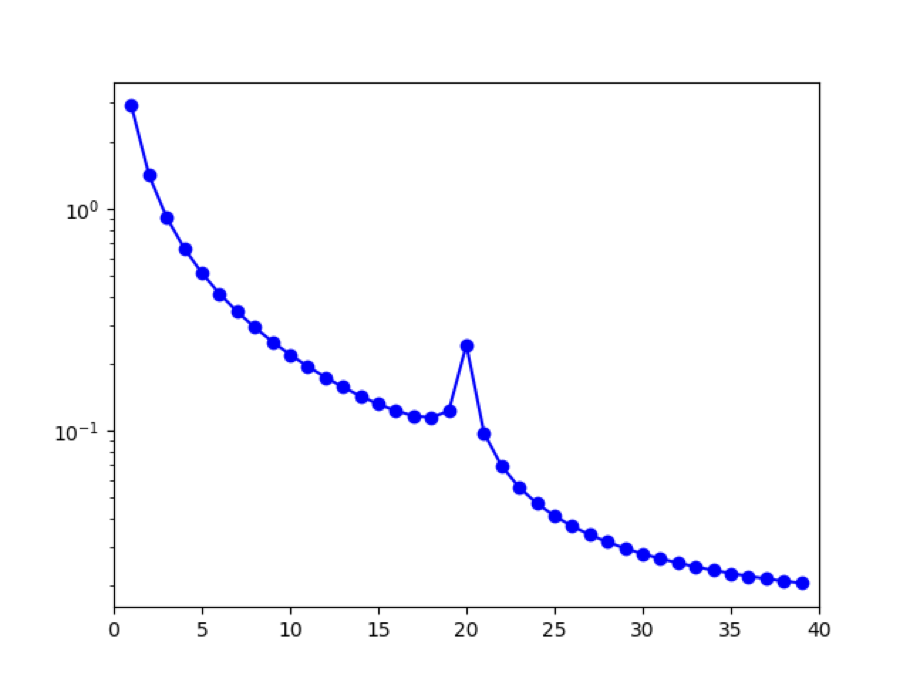

Polyploidy
dadi provides support for demographic models with homoeologous exchange and selection for auto- and allopolyploids by treating each subgenome in the polyploid lineage as a separate population. Below, we outline key differences and considerations when using dadi to model polyploids. Brief examples are provided for auto- and allotetraploids with more complex examples given in (TODO: add path/link to polyploid examples.)
Specifying a Polyploid Model
Defining a demographic model for a polyploid is almost identical to defining a standard dadi demographic model. There are two key differences. First, the integration functions in dadi.Polyploidy.Integration must be used in place of the standard dadi.Integration functions (although most other dadi functions including those in dadi.Numerics and dadi.PhiManip can be used without modification).
Second, the ploidy of each subgenome/population must be specified during each integration by setting the ploidyflag parameter using the PloidyType class in dadi.Polyploidy.Integration. By default, the ploidy is assumed to be diploid, but this can easily be changed. For example, to model a simple two-epoch (single size change) model for an autotetraploid, we would use the following code from dadi.Polyploidy.auto_demographics.two_epoch:
def two_epoch_autotetraploid(params, ns, pts):
T_WGD, nu = params
xx = Numerics.default_grid(pts)
autoflag = Polyploidy.PloidyType.AUTO
phi = PhiManip.phi_1D(xx)
phi = PolyInt.one_pop(phi, xx, T_WGD, nu=nu, ploidyflag=autoflag)
fs = Spectrum.from_phi(phi, ns, (xx,))
return fs
A similar model for an allotetraploid (which also includes a divergence period between the two diploid progenitors) is defined in dadi.Polyploidy.allo_demographics.two_epoch and is writted as:
def two_epoch(params, ns, pts):
T_div, T_WGD, nu = params
xx = Numerics.default_grid(pts)
alloaflag = Polyploidy.Integration.PloidyType.ALLOa
allobflag = Polyploidy.Integration.PloidyType.ALLOb
phi = PhiManip.phi_1D(xx)
phi = PhiManip.phi_1D_to_2D(xx, phi)
# integration for the diploid progenitors diverging
phi = Polyploidy.Integration.two_pops(phi, xx, T_div)
# then, integration for the allotetraploid formation
phi = PolyInt.two_pops(phi, xx, T_WGD, nu1=nu, nu2=nu,
ploidyflag1=alloaflag, ploidyflag2=allobflag)
fs = Spectrum.from_phi(phi, ns, (xx,xx))
return fs
Homoeologous exchange
Including a migration parameter between subgenomes acts as a proxy for homoeologous exchange (gene flow between subgenomes arising from homoeologous recombination). The following example models an allotetraploid with homoeologous exchange between the two subgenomes which as shown in (TODO: add figure reference) impacts the shared polymorphism in the interior of the SFS and fixed heterozygosity at opposing corners of the SFS.
TODO: Add model with homoeologous exchange and figure.
Collapsing into a single, one-dimensional SFS
The separate subgenomes of a polyploid can also be collapsed into a single, one-dimensional SFS. Depending on the biological context, this approach may be useful as there is no need to predetermine if the lineage is auto- or allopolyploid. There is also no need to separate SNP calls between subgenomes because fixed heterozygosity is naturally accommodated by combining each subgenome's frequency spectra into a single SFS.
TODO: Add code for collapsing into a single SFS here with a figure.
Selection
As in standard dadi models, genotype fitnesses are specified as \(1+2s_i\) where \(s_i\) is the selection coefficient for genotype \(i\). So, selection coefficients sometimes need to be rescaled by a factor of two when working with other software for inference or simulation, including SLiM 10.
As a concrete example, the fitnesses for an autotetraploid with \(0, 1, 2, 3, \) and \( 4 \) derived alleles are \(1, 1 + 2s_1, 1 + 2s_2, 1 + 2s_3\), and \(1 + 2s_4\). So, \(s_i \) corresponds to the selection coefficient for an individual with \(i \) derived alleles.
Outline how to specify a model with selection here (for an additive case and a more complicated case).
Initializing phi for polyploid models
For autopolyploids, we provide support for starting a demographic model from the diploid or polyploid equilibrium allele frequency distribution. Depending on the time of the whole genome duplication event and other biological context, one of the two equilibrium distributions may be more appropriate.
To model the transition to polyploidy for an autotetraploid, we can start with the diploid equilibrium and model the demographic history of the autotetraploid since the whole genome duplication event: (TODO: add code)
Alternatively, we can start from the polyploid equilibrium and focus on modeling the more recent history of the autotetraploid: (TODO: add code)

Figure 8 Tetraploid SFS: FIS = 0.8.
def two_subgenomes(params, ns, pts):
T, m = params
xx = dadi.Numerics.default_grid(pts)
phi = dadi.PhiManip.phi_1D(xx)
phi = dadi.PhiManip.phi_1D_to_2D(xx, phi)
phi = dadi.Integration.two_pops(phi, xx, T, 1.0, 1.0, m, m)
fs = dadi.Spectrum.from_phi(phi, ns, (xx, xx))
fs2 = dadi.Spectrum(dadi.Misc.combine_pops(fs))
return fs2
Listing 11 Two subgenomes: At time T in the past, an equilibrium population duplicates (autopolyploidy) and the subgenomes exchange genes symmetrically at a rate of m. The SFS for the subgenomes are then combined with the combine_pops function to create a single, polyploid SFS